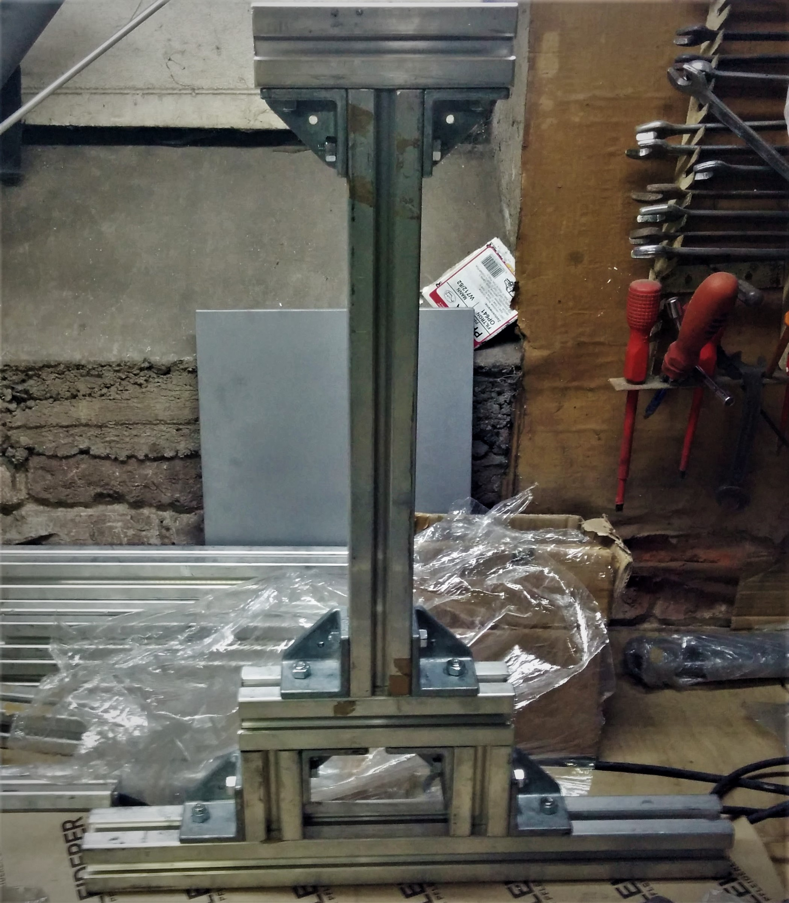
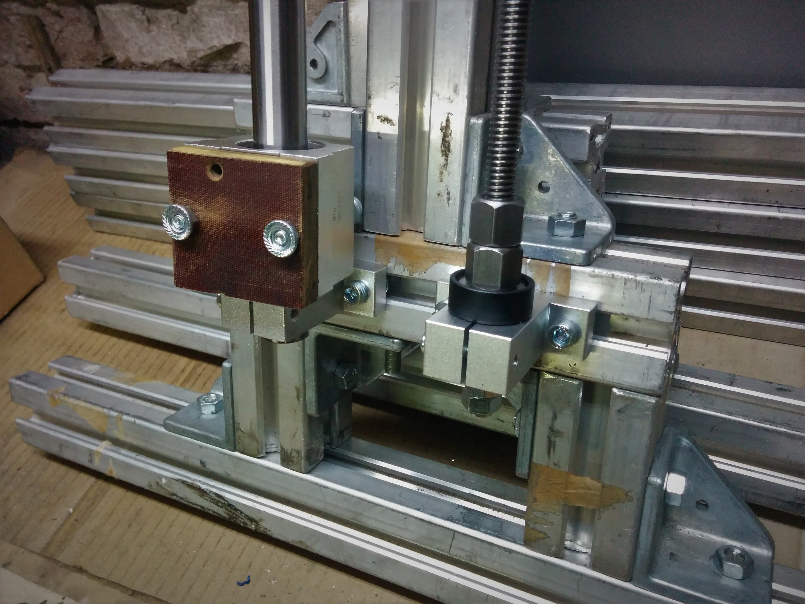
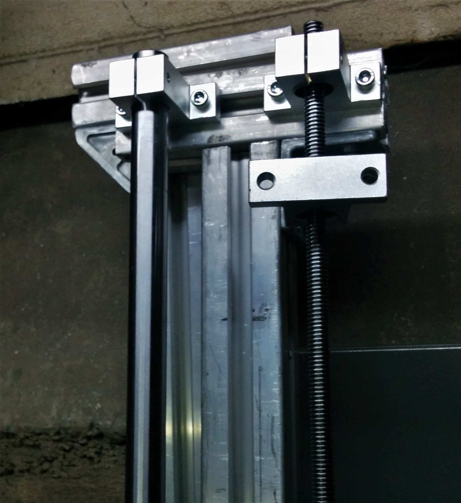
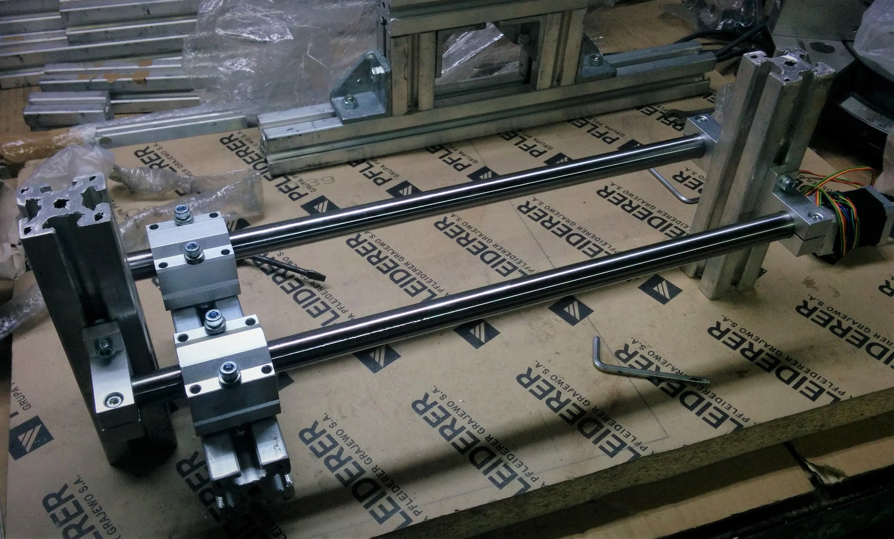
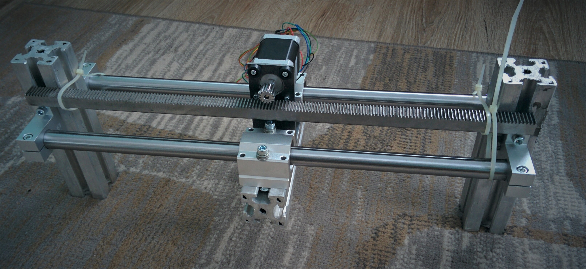

All-metal 3D Printer
Nov 11, 2018 10:30 · 511 words · 3 minute read

Back in 2017 there were no cheap-and-good 3D printer readily available on the market. Basically all that was available were budget Prusa clones, but neither rigid nor especially cheap. That's why I started designing my own construction of heavy-weight all-metal FDM 3D printer with some lightweight CNC routing in mind.
As it turned out, it was rather nice 3D printer but not very practical CNC router.
NOTE: This is post-factum description of historical project, so it's already known how it turned out.
Design
By the time I have been designing this printer, only 3D modelling tool I had any grasp of was Blender. It was not especially delightful experience, but I've made my way through it somehow.
One of first concepts was cubical in form, with moving printing table as X axis:
 First concept
First concept
Another one had X axis stacked on top of Y and Z, enabling heated bed to be immobile and rigid. Although it sounded great, it required a lot of linear bearings and rods, essentially skyrocketing overall price tag. Taking this into consideration, I have settled on more “standard” approach with Y being mobile heatbed, X being stacked on top of Z powered by two trapezoidal screws. As it turned out, it wasn't the smartest choice for a CNC router.
 Design I'll be proceeding with
Design I'll be proceeding with
Build
Not much to talk about - starting with concept shown above, I've made my way through build. General idea was to keep things adjustable, as I had no tools to hard-build everything precisely and straight enough.
- Frame made of 4040 aluminium extrusions
- 20mm linear rods with linear bearings
- Z powered by 10mm trapezoidal screws
- X and Y controlled via rack and pinion
- Everything driven with Arduino+RAMPS (later exchanged for MKS Sbase running Smoothieware)
 Vertical Stack, test fitting after cutting
 Details of Z axis mount, bottom
 Details of Z axis mount, top
 Building X gantry
 Test fit
Test fit
 Testing X gantry fit
Powering and testing X gantry (with zip-ties!)
Ready for printing
Printing
Trying to cut wood
Cutting wood
Conclusions
I have recently bought another 3D printer, for smaller work (Anycubic Kossel Linear). This changed my priorities a bit - by having separate general purpose 3D printer, I could sacrifice some FDM-specific capabilities for usability as CNC router. That's how rebuilding this printer into CNC router become a thing.
As a 3D printer, certainly great thing here was rigidity - after bed has been leveled, there's no way something become loose or required repeated calibration. I could keep printing repeatedly remotely, with just family members keeping an eye if nothing's on fire.
However, dual Z screws and motors become real issue for any milling operations. Asymmetrical load in Z axis (operations like drilling with X axis being far of center) easily caused opposite motor to lose steps - virtually rendering machine useless until I re-level Z axis again. I could fight that with better stepper control and multiple Z endstops, but it just kept bugging me.
See CNC Router - Part 1, where I track progress rebuilding this machine into lightweight, desktop CNC router.